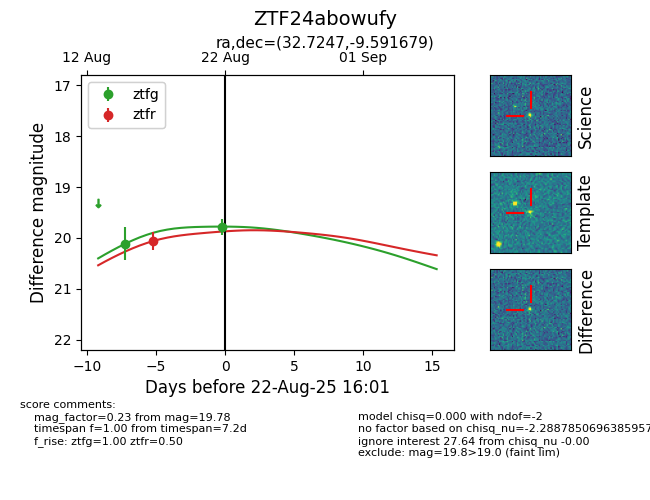

Target ZTF24abowufy at 2025-08-22 16:26, see:
FINK: fink-portal.org/ZTF24abowufy
Lasair: lasair-ztf.lsst.ac.uk/objects/ZTF24abowufy
ALeRCE: alerce.online/object/ZTF24abowufy
alt names
ZTF24abowufy (ztf,alerce)
coordinates:
equatorial (ra, dec) = (32.7247,-9.59168)
galactic (l, b) = (173.5993,-64.33030)
photometry
last atlaso=20.22, ztfg=19.78, ztfr=20.06
1 atlaso, 2 ztfg, 1 ztfr detections
